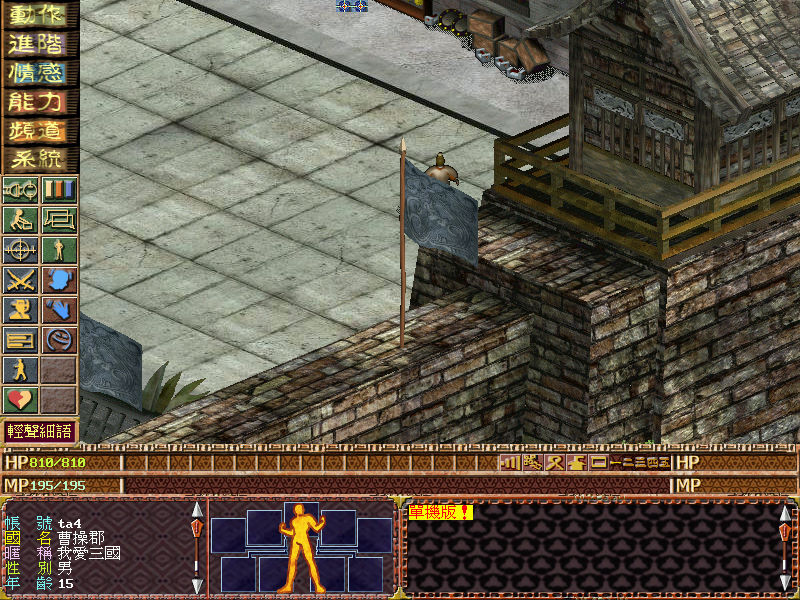
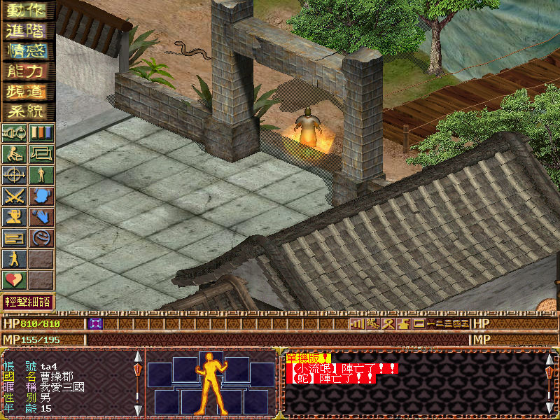

名稱：網路三國 (中文版)
簡介：中華網龍2000年出品的線上角色扮演養成遊戲，由智冠代理發行，以3D斜角畫面呈現，
採單人即時方式戰鬥。由於遊戲伺服器已關閉，玩家目前只能玩單機版，但只有內定
的一個武士職業角色，無法變更成其他職業，部份網路限定功能也無法使用 [待補]。


保護：無
備註：單機版只能使用內定的武士角色（結束遊戲時自動儲存）。
備註：虛擬機+XP速度會過快，不好操控，建議使用PCem+Win9x系統執行。